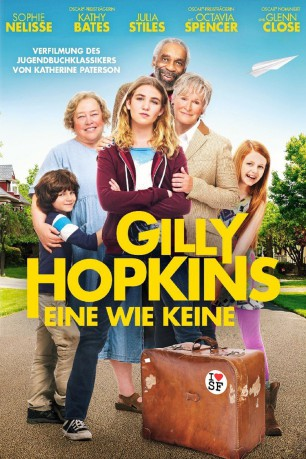

gesehen am 11.11.2016
gesehen am 11.11.2016Alternativ: The Great Gilly Hopkins gesehen am 11.11.2016
 
 IMDB-Wertung: 6.5 / 10
IMDB-Wertung: 6.5 / 10  Metascore:
Metascore: 
Gilly Hopkins (Sophie Nélisse) ist ein Pflegekind und wird von einer Familie zur nächsten weitergereicht. Daher hat sie es sich zur Aufgabe gemacht niemanden zu brauchen – weder ihr aufrichtiger Sozialarbeiter Mr. Ellis noch ihre engagierte Lehrerin Miss Harris und schon gar nicht ihre neue Pflegemutter Maime Trotter (Kathy Bates). Gilly‘s einziger Wunsch ist es, dass ihre leibliche Mutter Courtney (Julia Stiles) sie zurückholt, daher heckt sie seinen Plan aus. Doch vielleicht ist die neue Pflegefamilie gar nicht so schlimm und das große Glück ist näher als man zu glauben meint …
Jahr: 2016
Dauer: 99 Minuten
FSK: 6
Land: USA Studio: Lionsgate PremiereTonspuren: DTS - ,
Untertitel:
Auflösung: 1080p (1920x800) Größe: 4648 MB
Genre: Komödie, Drama, Familie
Regisseur: Stephen Herek
Drehbuch: Dimitri Logothetis
Soundtrack:
Darsteller:
 Sophie Nélisse als Gilly Hopkins
Sophie Nélisse als Gilly Hopkins Kathy Bates als Maime Trotter
Kathy Bates als Maime Trotter Glenn Close als Nonnie Hopkins
Glenn Close als Nonnie Hopkins Octavia Spencer als Miss Harris
Octavia Spencer als Miss Harris Julia Stiles als Courtney Rutherford Hopkins
Julia Stiles als Courtney Rutherford Hopkins Bill Cobbs als Mr. Randolph
Bill Cobbs als Mr. Randolph Billy Magnussen als Ellis
Billy Magnussen als Ellis Clare Foley als Agnes
Clare Foley als AgnesDatei: X:\2016(G-M)\Gilly Hopkins - Eine wie keine (2016, FSK6, 1920x800).mkv seit 09.11.2016
Festplatte: HD 2016(A-Z)
 Es gibt insgesamt 164 Filme in der Gruppe '2016(G-M)'
Es gibt insgesamt 164 Filme in der Gruppe '2016(G-M)'